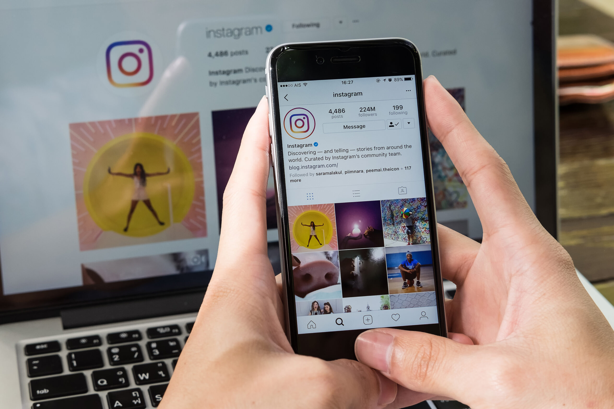
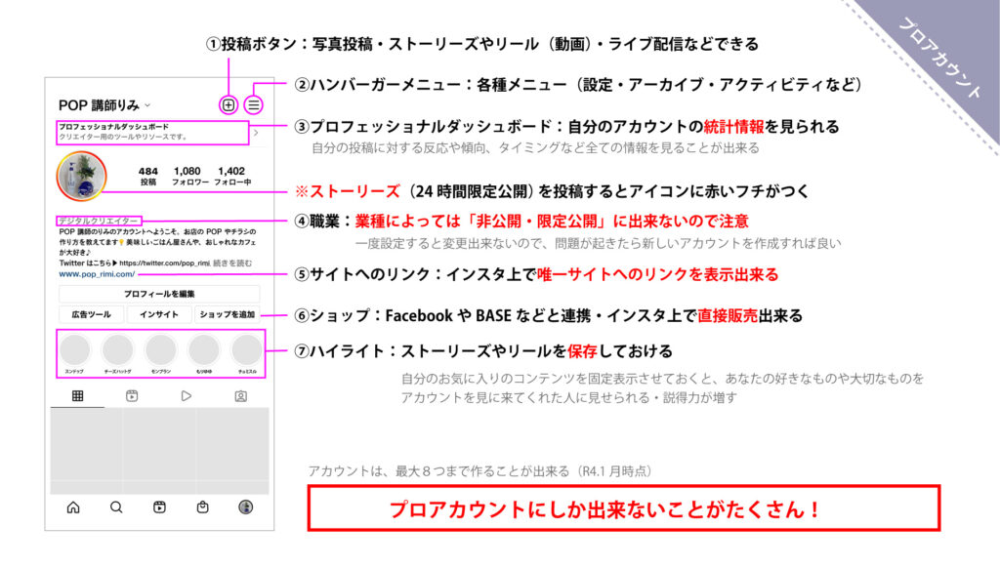
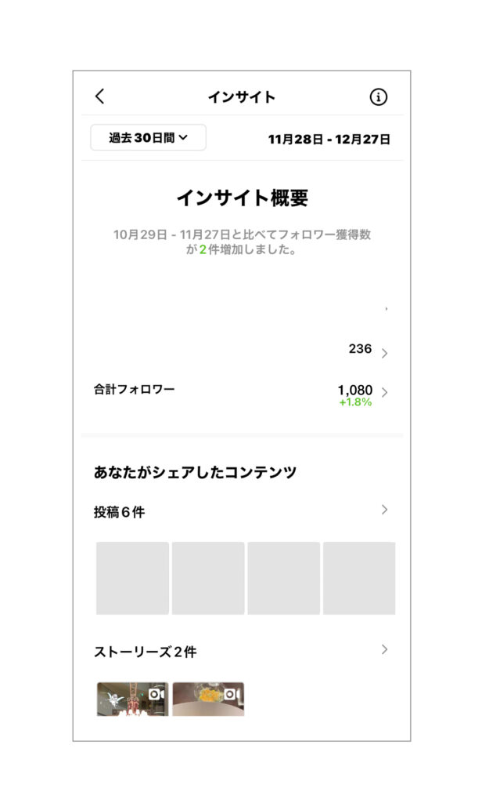

#041_インスタ実践編

あけましておめでとうございます！matsumotoです。今日は、前回に続きインスタグラムの活用方法を、より具体的に詳しく解説していきます。以前、POP作成方法の解説をしてもらった「POP講師りみ」さんに説明してもらいますので、よろしくお願いします。

こんにちは、りみです。インスタグラムには、一般のアカウントと「プロアカウント」があることを前回解説しました。インスタをビジネスに活用するためには、まずアカウントを「プロアカウント」にします。プロアカウントにする方法は、②メニューから「設定」画面に進み、「アカウント」から各種設定を行います。インスタグラムから直接物販など行いたい場合は、Facebookとの連携やクレジットカードの登録など必要ですので、「どこまで公開してよいのか、公開しても問題ないか」をきちんと確認してから行ってください。
（１）プロアカウントにすると良い点
上の画像の通り、プロアカウントにすると「プロフェッショナルボード」から自分のアカウントの「インサイト」を見ることが出来るようになります。

このように、一定期間を選んであなたのアカウントにリーチ（閲覧）してくれた人数や、アクションを実行したか（イイネをつける、フォローする）など確認することができます。もちろん、無料で利用できますのでぜひやってみてください！「>」マークが付いているメニューは、タップしてさらに詳しい情報を見ることができます。
もしあなたがすでに大勢のフォロワーを獲得していれば、さらにどんどん閲覧数が伸び、ビジネスの成果に直結することができます。まだフォロワーが少ない、という場合も、このインサイト画面から自分の投稿の良かった点・ダメだった点など詳しく分析し、改善を加えていきましょう。
（２）投稿のコツ
・投稿はスマホから！（豊富なテンプレートを利用できます）画像編集もアプリでやれば簡単
・人の気配を感じさせる写真・文章（自動投稿的なおざなり投稿にしない）
※画像が文章より魅力的・説得力があるならそれでOK
・ハッシュタグは毎回変えて反応を見る（漢字を平仮名にする、～と繋がりたいなど）
・ハッシュタグは30種類まで。好きなアカウントを見つけて同じハッシュタグをつけてみる
…など、難しいことは何もありません。現在では、実はフォロワー数を気にすること自体すでに時代遅れであるとも言われています。人が新しいアカウントに目をとめ、写真にイイネをつけて、さらに投稿主をフォローするにはいくつか段階が必要です。すぐにフォローしてもらえなくてもOK！それよりも「ブックマーク（保存）」してもらった数を気に留めましょう。あなたの投稿が魅力的なので、また見たいと思ってくれている証拠です。
（３）イイネをつけてもらったら
ここが大切です！ フォロワー以外の人がイイネをつけてくれたら、すぐその人のアカウントを見に行きましょう。相手が何を好きで、どういうことを投稿しているのか把握できます。「非公開」になっていたら、フォローリクエストを送ってみましょう。「リアルな友だち以外承認しない」「同じ趣味の人しか承認しない」など、人によってそれぞれの決まりごとがありますので、もし承認されなかった場合も気にする必要はありません。
また、その人の投稿にイイネを付け返してあげることも良いです。相手も「自分のアカウントを見に来てくれた！」と喜んでくれます。箇条書きにすると以下の通りです：
・イイネしてくれた人のインスタは必ず見に行くこと（自分のファン層を確認）
・そのアカウントがアップしている写真のうち、イイネの数が少ないものにイイネをつける
・自分の狙う層と、実際にイイネしてくれた人の層が一致しているかよく確認
（４）注意事項
他人を傷つけるような投稿はいけません。いわゆる「リテラシー」が求められます。特定の誰かを責める・文句を言う・けなすような投稿は、嫌われたり特定の人の恨みを買う可能性さえあります。他のSNSで「あのアカウントはちょっと…」など悪い評判が立つこともありえます。
また、女性の方は特に「顔写真のアップ（友だち含める）」に注意してください。世の中には、本当に悪いことを考えている人、おかしな嗜好の人がいます。簡単に言うと「悪質なストーカー」がついてしまうと大変、ということです。りみも実際に、女性っぽいプロフィール写真の人からのコメントに返信したところ、猥褻なコメントを書き込まれてゾッとした…という経験があります。
こちらもまずいことをやらかしたら新しいアカウントを作ることが出来るのと同様に、相手も新しいアカウントをどんどん作ってしつこく粘着してきます。この時「瞳に住んでいる街の風景が映り込んでいる」「友達の制服から学校を特定されて狙われる」など、命の危険につながりかねないこともあります。くれぐれも、身元を特定されないよう気を付けてください。しつこく狙われている、と気がついたらまず顔写真はすべて非公開にして、DMなどで個人情報を聞かれても答えないよう注意が必要です。
自分の居場所を特定されるような投稿をしたい場合は「自分がその場を離れてから」投稿することをおススメします。「京都に来ましたー！」などとその場で投稿すると、相手はあなたの服装や持ち物から簡単にあなたに会いに来ることができます。くれぐれも、「投稿するタイミング」にはご注意ください。あらかじめみんながスマホを見ている時間帯（通勤・通学時間帯）あたりで自分が投稿する時刻を決めておくのも良いです。
（５）それでもフォロワーを増やしたい
よく「フォロワーを増やしたいので毎日投稿！」などと意気込んで毎日頑張る人がいますが、それは正解とも不正解とも言えます。毎日投稿を続け、ハッシュタグをたくさん付けて投稿してもフォロワーが増えない場合、以下の原因と対策が必要です：
◯毎日投稿してもうまくいかないのは、ターゲット層を見誤っているかうざいと思われている（ブロックされている）
◯イイネをしてくれた人が外国人なら、投稿やハッシュタグに外国語を織り交ぜてみると効果的
◯自分の世代のはやり言葉など織り交ぜ、同じような属性のファンをつかんでいく
◯無理に若ぶったり、かしこぶってもすぐバレます。ありのままの自分で勝負
インスタには「ストーリーズ」や「リール（動画）」など、フォロー外の人にも自分の投稿を見てもらえる機能があります。
ストーリーズは基本的に24時間限定公開で、「保存」しておけばアーカイブとして自分のホーム画面に表示できます。ストーリーズを投稿すると、アイコンに「赤っぽいグラデーションの輪っか」が表示され、フォロワーのインスタ画面の上に表示されて目立つことができます。
また、リール（動画）は自分のフォロワー以外にも見てもらえるのが良いところ。元は自分が撮った静止画であっても、インスタグラムについている機能でいろんな動きのあるアニメーションや音楽を追加して動画にすることができます。著作権などの都合により、実際には付けられないものも多いですが、何もないよりはマシ、程度に思っておけば良いでしょう。ストーリーズやリール投稿をまめにするのであれば、普通の投稿は多少サボっても大丈夫！
さらに、インスタライブなども出来ます。こちらも個人情報にご注意ください。平日晩や休日など、みんなが家でくつろいでいる時間帯に流せば、インスタ上での物販なども可能です。
（６）さいごに
インスタグラムの投稿では、サイトのURLなど載せてもリンクされません（タップしてもサイトを表示出来ない）。最近、LINE公式アカウントとインスタグラムを併用してサービスを販売しておられる方も増えました。プロフィール欄下にURLを入れる箇所があるので、必ずLINEのURLなり、物販サイトならそのアドレスを表記しておきましょう！
それでは、今年もどうぞよろしくお願いします。
もっと詳しい話を聞きたい、相談したいという方は、30分無料相談をご活用ください。画面下の「友だち登録」ボタンをタップして、matsumotoまでご相談ください！
●LINE公式アカウントをオススメする理由はこちら
●LINE公式アカウントでできることはこちら
●Lステップでできることはこちら